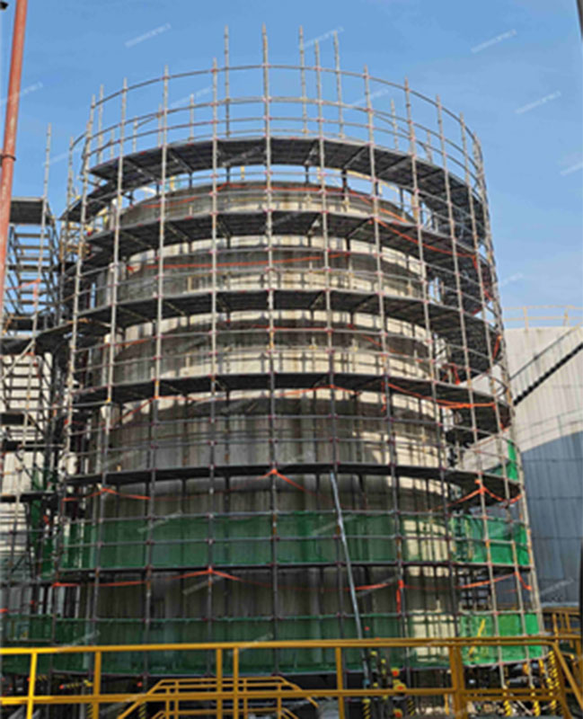
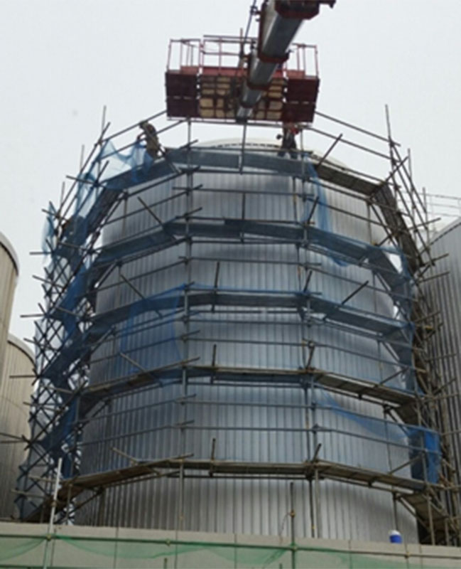
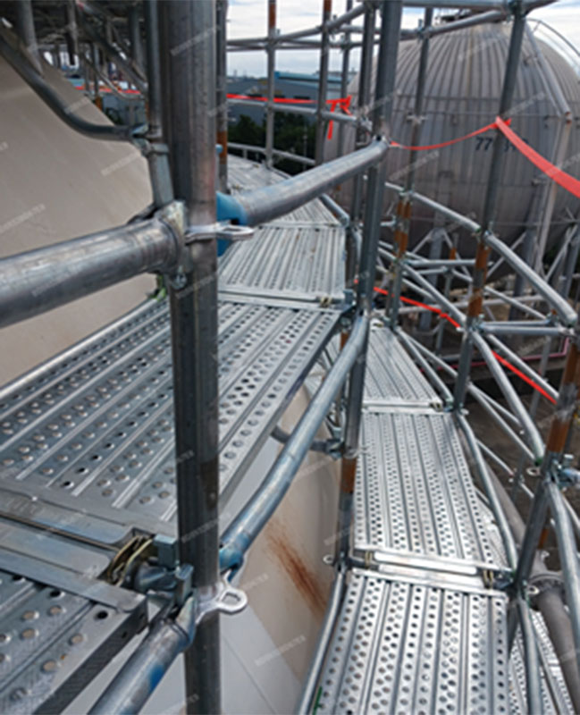

산업현장의 고소작업에서 작업발판 사이의 작은 틈새 하나는 생사를 가르는 위험 요소가 될 수 있다. 특히 구형 탱크, 원통형 저장탱크처럼 곡률이 있는 구조물에 일반 직선형 비계(건축 공사 가설 구조물)를 억지로 맞추는 방식은 발판 단차와 틈새를 반복적으로 만들어내며, 추락·낙하 사고의 잠재적 원인이 되어 왔다.
㈜디아이엔지니어링은 이 문제를 정면으로 파고들었다. 울산 플랜트와 산업기반시설 현장을 기반으로 가설자재의 설계·제작과 안전기술 R&D를 수행해 온 이 기업은, 원형·비정형 구조물 전용 가설 작업 발판 시스템인 ‘TIPO 원형시스템비계’를 개발해 산업현장 안전의 새로운 기준을 제시했다. TIPO는 곡면 구조물의 가장자리를 따라 연속적인 작업면을 구성하는 기술이다. 그 성과를 인정받아 디아이엔지니어링은 2025 대한민국 안전기술대상(행정안전부)을 수상했다. 현장의 불편을 해소하고 작업자의 생명을 지키는 기술로 평가받은 것이다. 정재훈 대표에게 TIPO 개발 배경과 현장 적용 사례, 그리고 미래 비전까지 직접 들었다.
Q. 원형·비정형 구조물 전용 가설재 개발에 뛰어들게 된 계기가 궁금해요.
현장에서 직선형 가설재를 원형 구조물에 억지로 맞추는 과정을 보면서 문제의식이 시작됐습니다. 구형 탱크나 원통형 저장탱크처럼 곡률이 있는 구조물에 일반 시스템비계를 적용하면 발판 단차, 틈새, 동선 불연속이 생기기 쉽습니다. 이는 단순한 시공 불편이 아니라 작업자의 발빠짐, 공구 낙하, 추락 위험으로 직결됩니다. “원형 구조물에는 원형에 맞는 작업발판과 비계 시스템이 필요하다”는 생각이 TIPO 원형시스템비계* 개발로 이어졌죠.
*TIPO 원형시스템비계: (주)디아이엔지니어링이 개발한 곡선(원형) 구조물 전용 가설 작업 발판 시스템. ‘TIPO’는 이탈리아어로 ‘둥근 모양의 원형’을 뜻하는 말로, 기존 사각형 형태의 시스템비계 한계를 극복하기 위해 만든 브랜드명.
Q. 기존 직선형 비계와 비교했을 때 차별점은 무엇인가요.
가장 큰 차이는 구조물을 바라보는 출발점입니다. 기존 방식은 직선형 부재를 현장에서 잘라 맞추거나 보강해 원형 구조물에 적용하는 방식에 가깝습니다. 반면 TIPO 원형시스템비계는 처음부터 스피어탱크와 실린더탱크처럼 곡률이 있는 구조물 가장자리 작업을 전제로 설계되었어요.
기술적으로는 각도형 수평재와 전용 안전발판을 조합해 원형 둘레를 따라 작업면을 구성합니다. 이를 통해 일반 방식에서 발생하기 쉬운 곡률 불일치, 발판 단차, 개구부성 틈새, 조립 편차를 줄이고, 구조검토와 시공계획을 문서화하기 쉽게 만든 것이 핵심입니다.



Q. 안전성과 조립 효율성을 동시에 확보할 수 있었던 비결은?
핵심은 전용화와 표준화입니다. 예를 들어 반복되는 탱크 유지보수 현장에서 매번 임기응변으로 맞추는 방식보다, 표준화된 부재와 설치 순서가 있으면 조립 편차가 줄어듭니다. 재작업과 보강 작업도 줄일 수 있고요. 다만 현장 반경, 높이, 풍하중, 출입동선 등 조건에 따라 구조검토와 작업계획은 별도로 확인해야 합니다. 그래서 저희는 제품 공급에 그치지 않고 현장 조건별 구조검토와 설치계획을 함께 제시하는 방식을 중요하게 보고 있습니다.
핵심은 전용화와 표준화입니다. 예를 들어 반복되는 탱크 유지보수 현장에서 매번 임기응변으로 맞추는 방식보다, 표준화된 부재와 설치 순서가 있으면 조립 편차가 줄어듭니다.
Q. 울산 콤플렉스(울산CLX) 적용 사례에서 실제 현장 반응은 어떠했나요.
대형 플랜트 현장은 안전기준과 구조검토 기준이 매우 엄격합니다. 새로운 가설재를 도입하려면 좋은 제품이라는 설명만으로는 부족하고, 구조검토 자료부터 작업자 동선, 해체 순서까지 함께 설명할 수 있어야 합니다.
실제 적용 과정에서 가장 의미 있었던 부분은 “원형 구조물은 일반 비계와 다른 접근이 필요하다”는 것이었습니다. 이 피드백은 저희 기술이 단순한 자재 개발이 아니라 플랜트 유지보수 현장의 안전관리 체계를 보완하는 기술이라는 확신으로 이어졌습니다.
Q. 새로운 시스템 도입 시 작업자 적응 문제는 없었나요.
처음에는 낯설어하는 분들이 당연히 있었습니다. 저희는 복잡한 기술 설명보다 “원형 구조물에서 틈새와 단차를 줄이고, 작업면을 더 예측 가능하게 만드는 장비”라고 설명했습니다. 이를테면 ‘왜 필요한지’를 설득하는 과정이었죠. 관리자에게는 구조검토, 하중, 설치순서 등 문서화된 자료를 함께 제시했고요. 안전기술은 현장에서 이해되고 반복 사용될 수 있어야 의미가 있습니다. 그래서 작업자 교육, 설치 매뉴얼, 현장별 체크리스트, 구조검토 자료 패키지화까지 함께 추진하고 있습니다.
최종 비전은 대한민국 플랜트 안전기술을 세계 시장에서도 통하는 표준형 솔루션으로 만드는 것입니다. 그 출발점이 바로 지금 현장의 작은 틈새 하나를 줄이는 데 있다고 생각합니다.
Q. 앞으로의 계획과 최종 목표를 들려주세요.
단기적으로는 울산·여수·광양 등 석유화학·에너지 산업 현장을 중심으로 적용을 확대하고자 합니다. 스피어탱크와 실린더탱크를 시작으로 플랜트 저장시설, 발전소, 조선소, 탱크·사일로 등 원형·비정형 구조물 전반으로 넓혀갈 계획입니다.
중장기적으로는 TIPO를 AI 디지털 설계와 구조검토·안전관리 데이터가 결합된 산업안전 플랫폼으로 발전시키는 것이 목표입니다. 현장 데이터를 바탕으로 구조물 형상에 맞는 비계 배치, 자재 수량, 작업동선, 안전검토를 더 빠르고 정확하게 제시하는 방향입니다.
최종 비전은 대한민국 플랜트 안전기술을 세계 시장에서도 통하는 표준형 솔루션으로 만드는 것입니다. 그 출발점이 바로 지금 현장의 작은 틈새 하나를 줄이는 데 있다고 생각합니다.